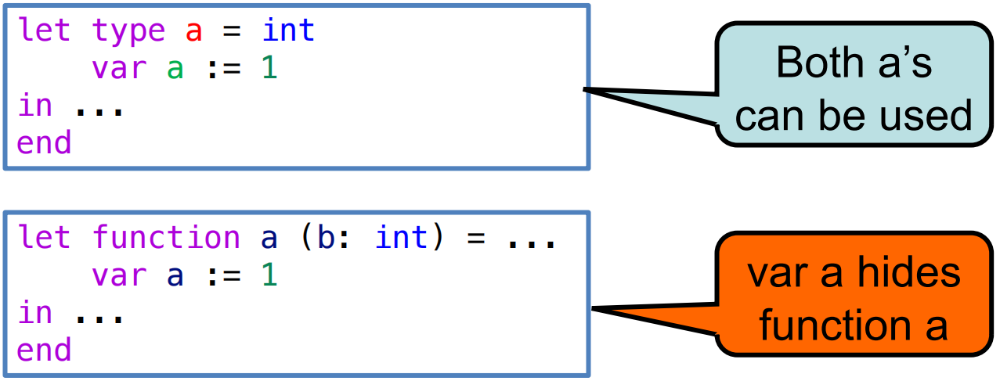

5 Semantic Analysis 语义分析 - type checking 类型检查部分¶
参考资料：
- 姚培森老师2024~2025学年春夏ch5ppt
- wcjj的笔记
- 伟大的Gemini 2.5 pro deep research
类型检查的作用：
- 提升开发效率：更高层次的编程抽象
- 优化运行性能：类型指导的编译优化
- 保障安全可靠：内存安全乃至功能正确
涉及的问题：
- 语言中合法的类型有哪些
- 如何判断两个类型是等价的
- 使用这些类型的规则是什么
tiger语言不涉及显/隐式类型转换
5.1 Tiger语言的类型系统¶
5.1.1 类型定义¶
- 基本类型 (Primitive Types)：类型系统中最原子的单位，无法再被分解
int、string
- 构造类型 (Constructed Types)：由其他类型组合而成的复合结构
- 记录类型 (Record Type)：将多个命名字段（field）及其对应的类型捆绑在一起，形成一个新的复合数据结构，其语法形式为 \(\{f_{1}:t_{1},..., f_{n}:t_{n}\}\)
- 数组类型 (Array Type)：表示由某一特定类型的元素组成的序列。其语法形式为
array of t
- 命名类型 (Name Type)：程序员可以通过
type声明为已有的类型（无论是基本类型还是构造类型）赋予一个新的名字，从而创建命名类型 - NIL 类型：这是一个特殊的类型，专属于字面值
nil，nil用于表示一个“空”的记录，可以被赋予任何记录类型的变量，作为其初始值
例子：
1 2 3 4 5 6 7 8 9 10 11 12 13 14 | |
5.1.2 类型等价判断¶
- NE - name equivalence：类型名称相同才是类型相同
- SE - structure equivalence：类型的结构定义相同
1 2 | |
这个例子中，point和ptr是SE但不NE的。
tiger语言使用NE，使用不同的类型名不等价。在这个前提下，有以下几个推论：
- 独立的记录类型声明创建不同的类型：即使两个记录类型声明的结构一模一样，它们也会被视为两种完全不同的类型。因此，以下代码在 Tiger 中是非法的，因为类型
a和b被认为是不同的，变量i和j的类型不匹配：1 2 3 4 5 6 7 8
let type a = {x: int; y: int} type b = {x: int; y: int} var i: a := a{x=1, y=2} var j: b := b{x=3, y=4} in i := j /* 非法操作！a 和 b 是不同类型 */ end - 匿名记录类型具有唯一身份：在 Tiger 中，记录的实例化表达式，如
{x=10, y=20}，会创建一个匿名的记录类型。这个匿名类型拥有一个自己独特的“隐藏”身份，它与任何其他类型（包括结构完全相同的命名类型）都不等价。 - 类型别名是等价的：Tiger 允许创建类型别名。如果一个类型
b被定义为另一个类型a的别名，那么a和b在命名等价的规则下被视为完全相同的类型，因为它们指向的是同一个源头声明。因此，以下代码是合法的：1 2 3 4 5 6 7 8
let type a = {x: int; y: int} type b = a /* b 是 a 的别名 */ var i: a := a{x=1, y=2} var j: b := i /* 合法操作！a 和 b 是相同类型 */ in i := j end
5.1.3 tiger类型规则¶
- 无隐式类型转换：Tiger 是一种强类型语言，不允许在不同类型之间进行自动的、隐式的转换。例如，不能直接将一个整数赋值给需要字符串的地方。所有类型转换必须由程序员显式执行。
- 变量声明时必须初始化：为了避免使用未定义的值，Tiger 强制要求所有变量在声明时都必须被赋予一个初始值。
- 函数调用：调用函数时，传入的实际参数（actual arguments）的类型必须与函数定义中形式参数（formal parameters）的类型等价（遵循命名等价原则）。
- 数组下标：用于访问数组成员的下标表达式，其类型必须是
int。 - NIL 类型规则：字面值
nil拥有特殊的NIL类型。这个类型非常灵活，它属于并且等价于任何记录类型。这意味着nil可以被赋值给任何记录类型的变量，作为其初始的空值状态。 - 递归类型定义规则：Tiger 允许定义递归类型，这对于创建链表、树等数据结构至关重要。但是，为了确保类型定义的良构性，Tiger 施加了一条关键限制：任何相互递归的类型声明所形成的环路，都必须经过一个
record或array类型。- 考虑一个非法的直接循环定义：
当编译器试图计算类型
1 2 3
/* 非法定义 */ type a = b type b = aa的大小时，它发现需要先知道类型b的大小；而要计算b的大小，又需要回头知道a的大小。这陷入了一个无法解析的无限循环，这样的类型在物理内存中无法表示。 - 考虑一个合法的间接循环定义：
这个例子中，
1 2 3
/* 合法定义：通过记录类型实现链表 */ type int_list = {head: int, tail: int_list} var my_list: int_list := nilint_list是一个记录类型。编译器在计算其大小时，发现它由一个int和一个int_list组成。关键在于，记录中的字段tail实际上存储的不是一个完整的int_list结构，而是一个指向另一个int_list结构的指针或引用。指针的大小是固定的（例如4或8字节）。因此，int_list的大小就是sizeof(int) + sizeof(pointer)。记录或数组类型在这里充当了一个“间接层”，它通过引入指针来打破无限递归，使得类型的大小可以被确定，从而能够在内存中实际分配。
- 考虑一个非法的直接循环定义：
5.1.4 命名空间¶
type是一个命名空间，函数和变量共用另一个命名空间。
在同一个作用域内，一个类型和一个变量（或函数）可以拥有相同的名字而不会产生冲突。类型检查器能够根据上下文来区分它们。
编译器内部必须维护两个独立的环境来分别管理这两种名称绑定。

上图的上面两个定义都有效，下面的函数定义会被变量定义覆盖。
5.2 Tiger类型检查¶
5.2.1 环境¶
- 类型环境 (Type Environment,
tenv)：这个环境负责将类型符号（即类型名称）映射到它们所代表的实际类型结构。- 例如，当遇到
type a = int声明时，tenv中会增加一个条目，将符号a映射到内部表示的int类型。当检查器后续遇到类型名a时，它会查询tenv来解析其具体含义。
- 例如，当遇到
- 值环境 (Value Environment,
venv)：这个环境负责存储变量和函数的信息。- 具体来说，它将变量符号映射到它们的类型，并将函数符号映射到它们的签名（即参数类型列表和返回类型）。例如，当遇到
var x: int := 0声明时，venv会增加一个条目，将符号x映射到int类型。
- 具体来说，它将变量符号映射到它们的类型，并将函数符号映射到它们的签名（即参数类型列表和返回类型）。例如，当遇到
这两个环境是类型检查器在遍历 AST 时的上下文。每当进入一个新的作用域（如 let 表达式或函数体），新的环境层就会被创建；退出作用域时，相应的环境层则被销毁。
5.2.2 类型检查算法¶
遍历AST实施类型检查：
- 自顶向下控制流：类型检查器从 AST 的根节点开始，递归地访问其子节点。
- 例如，要检查一个加法表达式
e1 + e2，检查器首先访问代表+的操作节点，然后向下递归地调用自身来分别检查左子节点e1和右子节点e2。
- 例如，要检查一个加法表达式
- 自底向上信息流：虽然控制流是向下的，但为了确定父节点的类型，必须首先知道其所有子节点的类型。
- 在
e1 + e2的例子中，检查器必须等待对e1和e2的递归调用返回它们各自的类型（比如都是int）之后，才能根据加法规则判断出+节点自身的类型也是int。类型信息就像是从树的叶子节点产生，然后逐级向上传递，最终汇集到根节点。
- 在
以表达式 let var x := 5 + 3 in x * 2 end 的类型检查为例：
先临时定义一个局部变量 x，并让它的值为 8。然后，在这个临时的上下文中，计算 x * 2 的值，并将这个计算结果（16）作为整个 let 表达式的最终值。
AST：
1 2 3 4 5 6 7 | |
步骤 1: 访问 LetExp 节点
- 动作: 类型检查器从根节点
LetExp开始。LetExp结构引入了一个新的作用域。检查器会调用venv.beginScope()和tenv.beginScope()来创建新的环境层。 - 控制流: 按照
let表达式的规则，首先处理其声明部分。检查器向下递归，访问VarDec(x)节点。
步骤 2: 访问 VarDec(x) 节点
- 动作:
VarDec(x)是一个变量声明。为了确定x的类型，检查器需要知道其初始化表达式的类型。 - 控制流: 检查器继续向下递归，访问
VarDec(x)的子节点OpExp(+)。
步骤 3: 访问 OpExp(+) 节点
- 动作:
OpExp(+)是一个二元加法操作。为了确定其类型，检查器需要知道其左右两个操作数的类型。 - 控制流: 检查器再次向下递归，分别访问
IntExp(5)和IntExp(3)。
步骤 4: 访问 IntExp 叶子节点
- 动作:
IntExp(5)和IntExp(3)是 AST 的叶子节点，这是递归的基准情况。根据(T-Int)规则，整数常量的类型是int。 - 信息流:
IntExp(5)返回类型int。IntExp(3)返回类型int。类型信息开始自底向上流动。
步骤 5: 返回至 OpExp(+) 节点
- 动作: 检查器收到了来自左右子节点的类型，都是
int。它应用加法(T-Plus)规则：int + int的结果是合法的，其类型为int。 - 信息流:
OpExp(+)节点计算出自己的类型为int，并将此类型返回给其父节点VarDec(x)。
步骤 6: 返回至 VarDec(x) 节点
- 动作:
VarDec(x)接收到其初始化表达式的类型为int。由于x没有显式类型声明，Tiger 语言会根据初始化表达式的类型推断x的类型为int。检查器随后更新当前作用域的值环境，添加一个新的绑定。 - 环境更新:
venv中添加绑定x \mapsto int。至此，let表达式的声明部分处理完毕。
步骤 7: 访问 LetExp 的主体
- 动作: 检查器现在开始处理
let表达式的主体部分。 - 控制流: 向下递归，访问
OpExp(*)节点。
步骤 8: 访问 OpExp(*) 节点
- 动作: 这是一个乘法操作，同样需要其左右操作数的类型。
- 控制流: 向下递归，分别访问
VarExp(x)和IntExp(2)。
步骤 9: 访问主体部分的叶子节点
- 动作:
- 对于
VarExp(x)：检查器在当前venv中查找x。根据步骤 6 添加的绑定，查找到x的类型是int。 - 对于
IntExp(2)：根据(T-Int)规则，其类型是int。
- 对于
- 信息流:
VarExp(x)返回类型int。IntExp(2)返回类型int。类型信息继续向上流动。
步骤 10: 返回至 OpExp(*) 节点
- 动作: 检查器收到了来自左右子节点的类型，都是
int。它应用乘法(T-Mul)规则：int * int的结果是合法的，其类型为int。 - 信息流:
OpExp(*)节点计算出自己的类型为int，并将此类型返回给其父节点LetExp。
步骤 11: 返回至 LetExp 节点
- 动作:
LetExp节点收到了其主体表达式的类型为int。根据let表达式的规则，整个表达式的类型就是其主体部分的类型。 - 最终类型: 整个
let var x := 5 + 3 in x * 2 end表达式的类型被最终确定为int。 - 环境清理: 检查结束，退出
let作用域。调用venv.endScope()和tenv.endScope()，丢弃在步骤 1 中创建的环境层，恢复到外部环境。